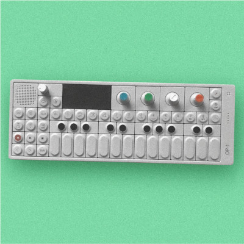
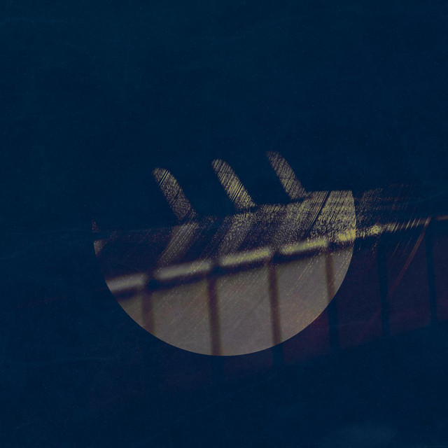

I make instrumental music. Here are some of them.

Songs made with OP-1.
Notes recorded live. No sequencers. I’m not good with timing, so expect sloppy.

Conversations is a four-piece composition of mellow
beats, jazz harmony, and mild piano improvisations. Made with
Here are two of them.
I’ve been making music since I was 15, more or less. Starting with the online music-making application Notessimo, to DAWs like LMMS, I’ve made music ranging from solo piano pieces to electronic dance music.
Here are some of my old (but not too old) songs and abandoned drafts. This collection is mostly from around 2016.